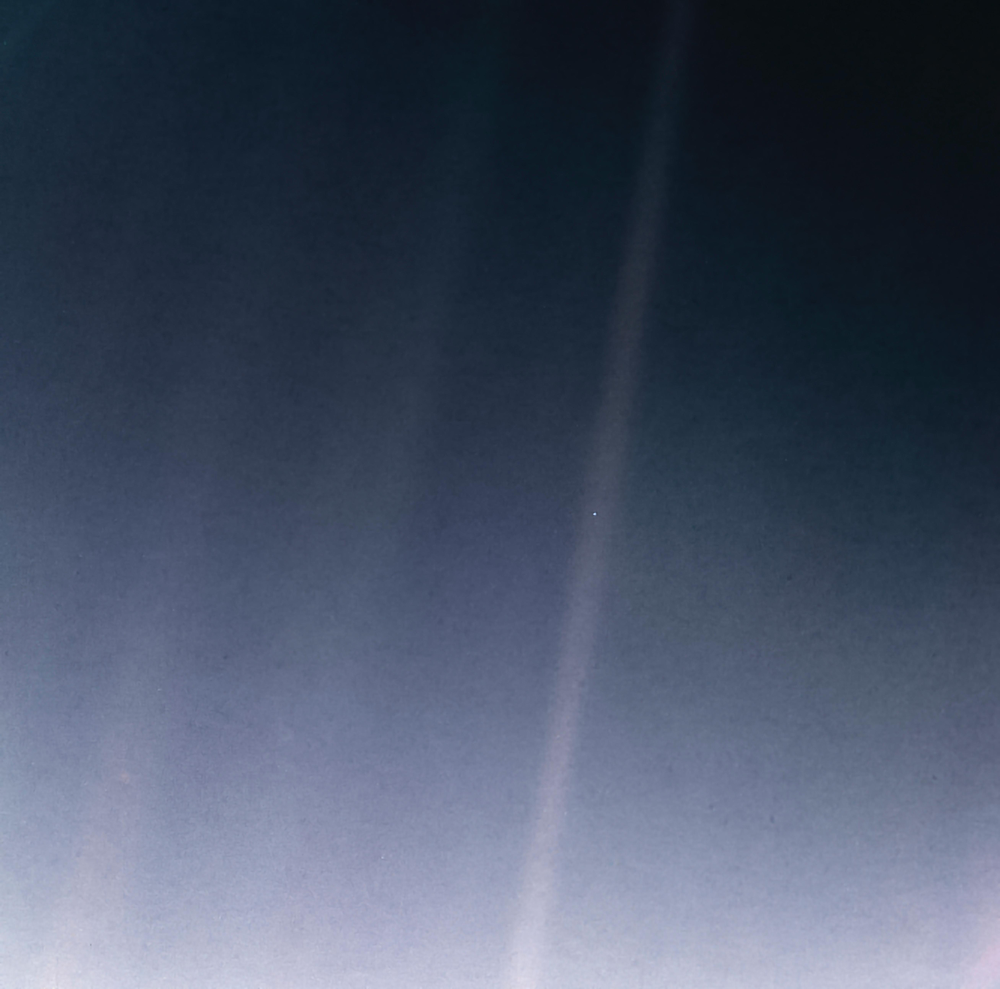

The verdict
This final section brings together all insights to reflect on what these visualizations about UFOs, space missions and exoplanet discoveries reveal about humanity's place in the cosmos.
When the Voyager 1 spacecraft was at the edge of our solar system, it look this photo of Earth before turning off its cameras forever. This photograph, called The Pale Blue Dot, was taken on February 14, 1990.

“Look again at that dot. That’s here. That’s home. That’s us. On it everyone you love, everyone you know, everyone you ever heard of, every human
being who ever was, lived out their lives… on a mote of dust suspended in a sunbeam."
The Earth is the only world known so far to harbor life...it underscores our responsibility to deal more kindly with one another, and to preserve and cherish the pale blue dot, the only home we've ever known.”
Carl Sagan